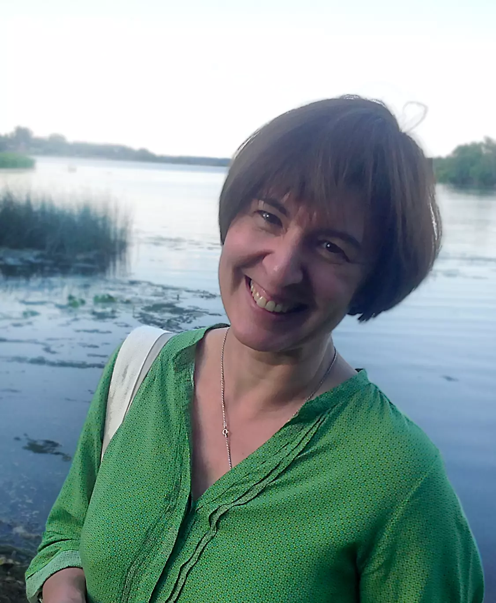
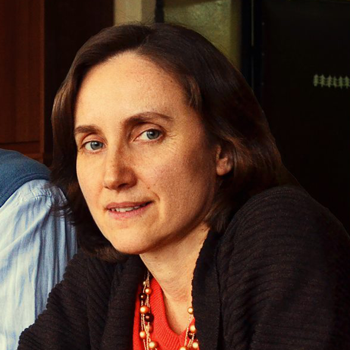
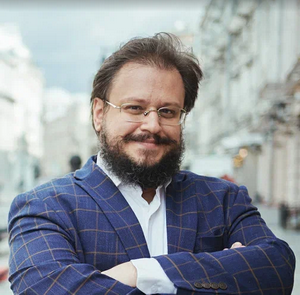
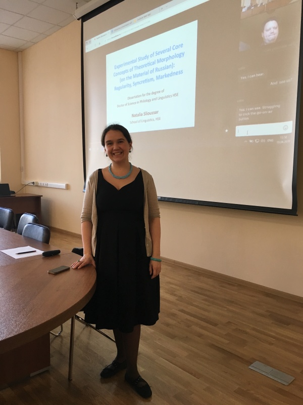

Пленарные докладчики ТМП 2017
Нина Романовна СумбатоваДоклад: Основания именных классификаций: от семантики до фонологии Аффилиация: РГГУ Текущая аффилиация: Доктор филологических наук, специалист по лингвистической типологии Научные интересы: лингвистическая типология, кавказские языки (даргинский, адыгейский, сванский), африканский язык ландума, морфосинтаксис, именные классификации. Образование и карьера:
Профессиональная деятельность:
|
Ольга Викторовна ФедороваДоклад: Психолингвистические исследования русского синтаксиса Аффилиация: МГУ Текущая аффилиация: Профессор кафедры теоретической и прикладной лингвистики МГУ Научные интересы: психолингвистика, нейролингвистика, когнитивная лингвистика, анализ дискурса, синтаксис, усвоение языка. Академические степени и звания:
Исследовательские области:
|
Борис Валерьевич Орехов (Gensling)Доклад: Стих как тип текста: проверка машинным обучением Аффилиация: НИУ ВШЭ Текущая аффилиация: Старший научный сотрудник Лаборатории цифровых исследований литературы и фольклора ИРЛИ РАН Научные интересы: цифровые гуманитарные исследования, компьютерная филология, машинное обучение в текстовом анализе, стихосложение, корпусная лингвистика. Биография: Родился в 1982 году в Уфе. Кандидат филологических наук. Образование и карьера:
Профессиональная деятельность:
|
Наталия Анатольевна Слюсарь (Gensling)Доклад: Information Structure and the Universality: General Problems and Several Curious Cases Аффилиация: CПбГУ / НИУ ВШЭ Текущая аффилиация: НИУ ВШЭ (Москва и Санкт-Петербург) Научные интересы: теоретическая и экспериментальная лингвистика, грамматические признаки и согласование, флективная морфология в ментальном лексиконе, вариации порядка слов, информационная структура. Биография: Родилась в Санкт-Петербурге 16 ноября 1980 года. Исследовательские области:
Работает в области теоретической и экспериментальной лингвистики в НИУ ВШЭ в Москве и Санкт-Петербурге. |